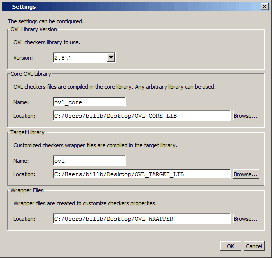

Configuring Library Settings
The Settings
dialog box allows you to designate the location of the OVL Core
library, where OVL checkers are compiled; the Target library, where
customized assertion checkers are compiled; and the storage location
for a copy of the customized OVL Wrapper Files.
Prerequisites
The OVL Checkers Manager graphic interface must be open and displayed.
Procedure
- Open the Settings dialog box
with either of the following actions:
Click the Settings toolbar button.

Select from the menus.
Either action opens the Settings dialog box (Figure 1).
Figure 1. Settings Dialog
Results
These settings apply to all customized checkers and are persistent from one invocation of the OVL Checkers Manager to the next.